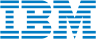

Google의 탄력적이고 확장 가능한 클라우드 인프라와 Google Cloud의 강력한 데이터 분석 및 AI 도구를 활용하여,
고객의 비즈니스 요구에 맞춘 맞춤형 클라우드 솔루션을 제공합니다.
이원정보기술의 전문 팀은 클라우드 마이그레이션, 관리, 최적화를 통해 IT 인프라의 효율성을 극대화하고, 디지털 전환을 가속화하는 서비스를 제공합니다.

IBM의 ACE(IBM App Connect Enterprise)와 APIC(IBM API Connect) 연계 솔루션 서비스를 통해 기업의 디지털 혁신을 지원합니다.
ACE는 다양한 시스템과 애플리케이션 간의 원활한 통합을, APIC는 API 관리와 보안을 최적화합니다.
이원정보기술은 이를 통해 고객이 데이터 흐름을 최적화하고 비즈니스 프로세스를 자동화하여 운영 효율성을 극대화할 수 있는 서비스를 제공합니다.
Redhat 및 Apache Camel 서비스를 통해 엔터프라이즈급 오픈 소스 솔루션을 지원하며, Redhat은 안정적이고 확장 가능한 Linux 플랫폼을 기반으로 클라우드 컴퓨팅, 컨테이너, 자동화, DevOps 솔루션을 제공합니다.
Apache Camel은 통합 패턴 구현을 위한 강력한 프레임워크로, 다양한 시스템 간 데이터 통합과 메시징을 단순화하고, 이를 통해 고객은 IT 인프라를 최적화하고, 운영 효율성을 극대화하며, 디지털 혁신을 가속화할 수 있습니다.
이원정보기술의 전문 컨설팅과 기술 지원으로 최적화된 Redhat 및 Apache Camel 솔루션을 통해 비즈니스 경쟁력을 강화하는 서비스를 제공합니다.
Dynatrace는 AI 기반 모니터링 솔루션으로 애플리케이션과 인프라의 성능을 최적화하여 문제를 신속하게 해결하며, 전체 스택 가시성, 자동화된 리소스 최적화, 사용자 경험 관리 등 다양한 기능을 제공합니다.
이원정보기술은 Dynatrace의 기술 서비스와 지원을 통해 고객이 디지털 전환을 가속화하고 최상의 성능을 유지할 수 있는 서비스를 제공합니다.